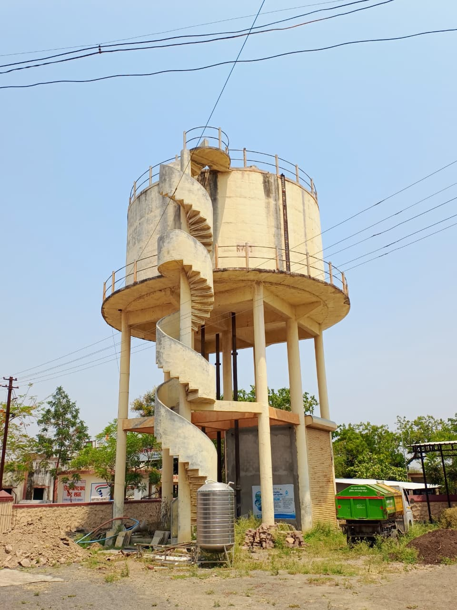
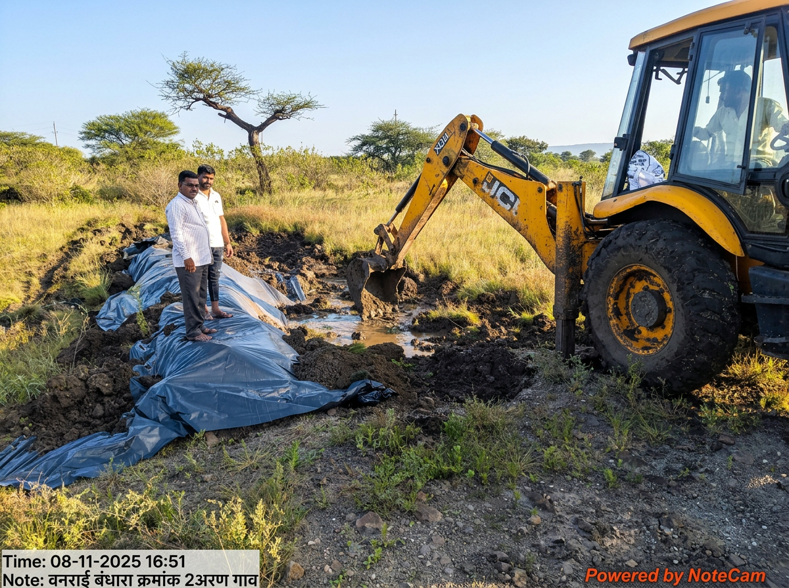

Meher Health Centre, Meherabad (Arangaon) — completed 17 June 1975

Village water supply tank — clean drinking water for Arangaon

Cattle vaccination drive — Mukhyamantri Samrudh Panchayat Raj Abhiyan

Vanrai Bandhara No. 2 — water conservation, Arangaon

Gramsansad Bhavan, Arangaon (Meherabad)